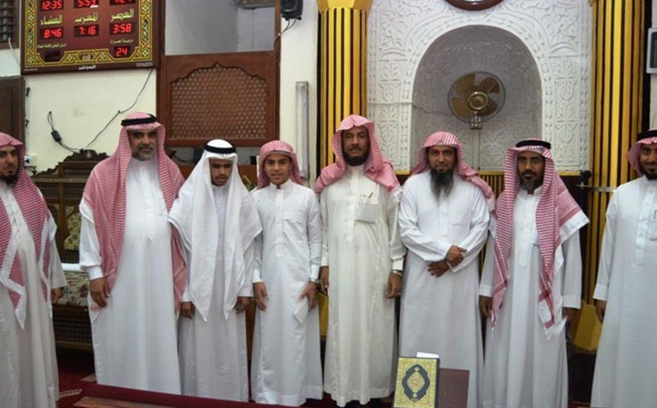
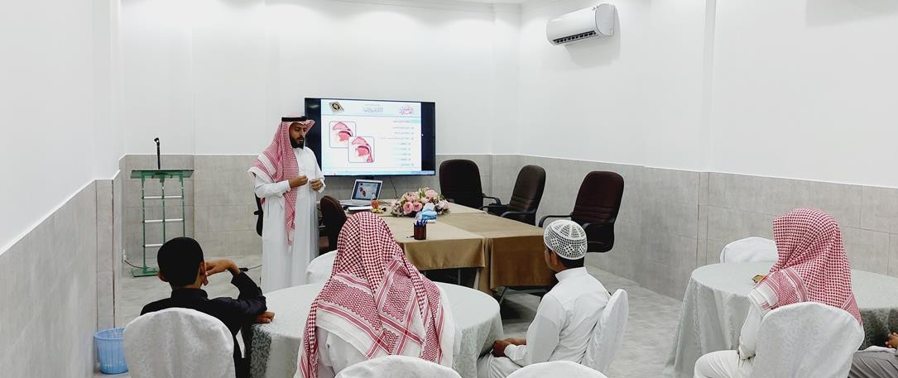
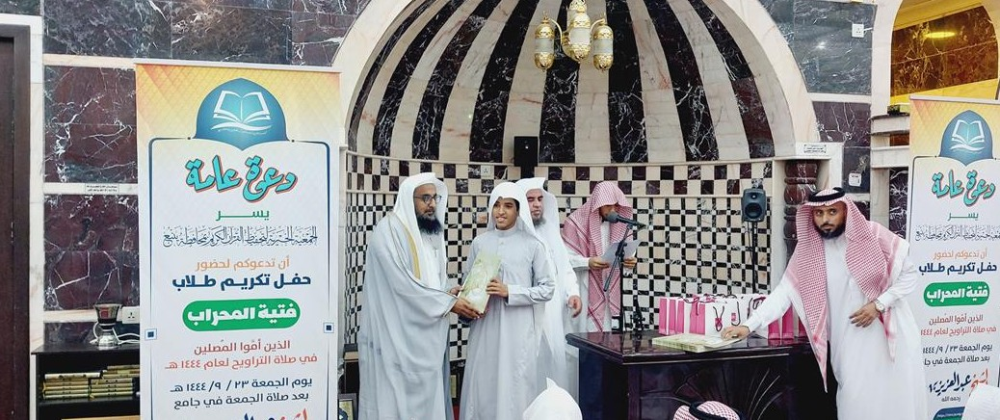

مقترح مشروع مقدَّم لمنح عام 2027م
فتية المحراب
تأهيل حفظة كتاب الله لإمامة المصلين في صلاة التراويح لعام 1448هـ
مقدَّم إلى مؤسسة عبدالعزيز بن عبدالرحمن الحمدان الخيرية
المشروع في أرقام
أثرٌ واسع بتكلفة محدودة
50
طالباً مؤهَّلاً
من حفظة أكثر من عشرة أجزاء
30
ألف مصلٍّ مستفيد
وأكثر، في صلاة التراويح كل عام
53
ألف ريال إجمالي التكلفة
تذهب 94% منها للطلاب مباشرة
4
مراحل تنفيذ
من رجب حتى رمضان 1448هـ
مشروع فتية المحراب · 2
فكرة المشروع
من الحفظ في الحلقة إلى الإمامة في المحراب
نختار نخبة من طلاب الحلقات المتميزين في الحفظ والأداء، ونؤهلهم علمياً وعملياً لإمامة المصلين في صلاة التراويح بمساجد ينبع، بالتعاون مع إدارة المساجد والدعوة والإرشاد بالمحافظة.
التعليم
دورات في التجويد والوقف والابتداء، وخطط حفظ ومراجعة وأداء منتظمة
الدعوة
سد حاجة المساجد إلى أئمة متقنين في التراويح، وإعداد أئمة للمستقبل
تعزيز القيم
غرس القيادة والثقة بالنفس والانضباط، وربط النشء بالمساجد
مشروع فتية المحراب · 3
مبررات المشروع
لماذا فتية المحراب الآن؟
1
حاجة مساجد المحافظة إلى أئمة متقنين لصلاة التراويح، ووجود عجز سنوي في تغطيتها
2
طلاب متميزون في الحلقات يحتاجون تأهيلاً يحوّل حفظهم إلى أداء وإمامة
3
الممارسة العملية ترفع إتقان الطالب وتحفزه على المراجعة المستمرة
4
بناء جيل من الأئمة المحليين يخدم مساجد ينبع بدل التغطية المؤقتة
5
نجاح مُثبت في الدورات السابقة: أكثر من 30,000 مصلٍّ استفادوا سنوياً
مشروع فتية المحراب · 4
أهداف المشروع
ستة أهداف لإعداد إمام المستقبل
تدريب حفظة كتاب الله على إمامة المصلين بإتقان وخشوع
تغطية العجز في أئمة صلاة التراويح بمساجد المحافظة
غرس مهارة القيادة والإمامة والثقة بالنفس منذ سن مبكرة
تحفيز الطلاب على مراجعة القرآن وإتقانه بشكل مستمر
تعزيز ارتباط الطلاب بالمساجد وخدمة المجتمع
اكتشاف المواهب القرآنية ورعايتها لتكون أئمة مساجد مستقبلاً
مشروع فتية المحراب · 5
آلية التنفيذ والخطة الزمنية
أربع مراحل تنتهي في محاريب رمضان
1
رجب 1448هـ
الترشيح والاختيار
ترشيح الطلاب من الحلقات، واختبار الحفظ والأداء، واختيار 50 طالباً
2
رجب وشعبان 1448هـ
التأهيل العلمي
دورتان تدريبيتان في التجويد والوقف والابتداء وأحكام الإمامة والصلاة
3
شعبان 1448هـ
التدريب العملي
تدريب في المساجد بإشراف معلمي الجمعية، ومراجعة مكثفة للمحفوظ
4
رمضان 1448هـ
الإمامة والمتابعة
إمامة المصلين في التراويح، ومتابعة ميدانية، ثم حفل تكريم الطلاب
مشروع فتية المحراب · 6
محاور التأهيل
ما يتعلمه الطالب قبل أن يتقدم للمحراب
أحكام التجويد
مخارج الحروف وصفاتها
الوقف والابتداء
أحكام الإمامة
أحكام الصلاة
التعامل مع المصلين
يعقب الدورات تدريب عملي في المساجد تحت رعاية معلم من معلمي الجمعية.

مشروع فتية المحراب · 7
الميزانية التفصيلية
كل ريال يصل إلى الطالب والتدريب
المبلغ المطلوب
53,000
ريال سعودي
منها 50,000 ريال مكافآت مباشرة للطلاب الأئمة، أي 94% من الميزانية
| الإجمالي (ريال) | تكلفة الوحدة | العدد | البند |
|---|---|---|---|
| 50,000 | 1,000 | 50 طالباً | مكافآت الطلاب الأئمة |
| 3,000 | 1,500 | 2 دورة | الدورات التدريبية |
| 53,000 | الإجمالي |
مشروع فتية المحراب · 8
المخرجات ومؤشرات الأداء
أثر نقيسه ونوثقه للمانح
| أداة التحقق | المؤشر المستهدف | المخرج المتوقع | الهدف |
|---|---|---|---|
| كشوف الحضور ونتائج التقييم | 50 طالباً يجتازون الدورتين | طلاب مؤهلون علمياً وعملياً | تأهيل الحفظة للإمامة |
| خطابات التنسيق وتقارير الإشراف | أكثر من 30,000 مصلٍّ مستفيد | مساجد مغطاة بأئمة | تغطية عجز المساجد |
| اختبارات قبلية وبعدية | تحسن درجات اختبار الأداء | تحسن الحفظ والأداء | رفع الإتقان |
| سجل المتابعة السنوي | استمرار الطلاب في الإمامة | نواة أئمة محليين | إعداد أئمة المستقبل |
يُرفع للمؤسسة تقرير ختامي موثق بالصور والأرقام بعد رمضان 1448هـ.
مشروع فتية المحراب · 9

الاستدامة والشراكات
برنامج سنوي مُجرَّب، أثره يمتد لما بعد رمضان
مشروع مستمر: تقيمه الجمعية كل عام، ونُفذ في 1446هـ بدعم أوقاف حمد الفهد الجعد الخيرية
شراكة حكومية: التنفيذ بالتعاون مع إدارة المساجد والدعوة والإرشاد بمحافظة ينبع
أثر ممتد: الطلاب المؤهلون يواصلون الإمامة، ويصبح بعضهم أئمة مساجد
كوادر متخصصة: الإشراف والتدريب العملي على يد معلمي الجمعية
مشروع فتية المحراب · 10
المرفقات الداعمة للطلب
وثائق تُثبت الجاهزية والأثر
شهادة تسجيل الجمعية
مسجلة لدى المركز الوطني لتنمية القطاع غير الربحي برقم 3165
خطاب تأييد إدارة المساجد
من إدارة المساجد والدعوة والإرشاد بمحافظة ينبع، يؤكد الشراكة وحاجة المساجد
تقرير منجزات دورة 1446هـ
عدد الطلاب الأئمة، وأسماء المساجد، وأعداد المصلين، وصور التكريم
كشف الطلاب المرشحين
أسماء الطلاب ومقدار حفظ كل طالب ونتيجة اختبار الأداء
مشروع فتية المحراب · 11
شاكرين لكم دعمكم لأهل القرآن
جوال 0553671414
هاتف 0125128912
tahfez-q@hotmail.com
yq.org.sa
حساب الجمعية (الشؤون التعليمية) – مصرف الراجحي: SA9780000327608010750004
رئيس مجلس الإدارة: د. سلامة بن سليم الرفاعي
مسجلة لدى المركز الوطني لتنمية القطاع غير الربحي برقم 3165